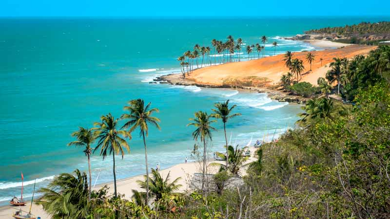

📍 Localização e História
O Ceará está localizado na região Nordeste do Brasil e faz fronteira com o Rio Grande do Norte, Paraíba, Pernambuco, Piauí e o Oceano Atlântico. Sua capital é Fortaleza, uma das cidades mais visitadas do país. O estado tem uma rica história que mistura a resistência indígena, o sertão nordestino e a força do povo cearense, conhecido por sua alegria e hospitalidade.
🏖️ Pontos Turísticos
O Ceará é um dos destinos turísticos mais procurados do Brasil. Entre seus principais atrativos estão as belas praias de Jericoacoara, com suas dunas e lagoas paradisíacas, e a animada Praia do Futuro, em Fortaleza. Outras atrações incluem o Beach Park — o maior parque aquático da América Latina — e a encantadora cidade serrana de Guaramiranga.

🎭 Cultura e Tradições
A cultura cearense é rica e divertida. O estado é considerado a terra do humor brasileiro, com grandes nomes como Chico Anysio e Tiririca. O artesanato em renda de bilro, as festas juninas e o Maracatu Cearense são expressões importantes da identidade local. Na culinária, destacam-se a peixada cearense, o baião de dois e a tradicional rapadura.
🌿 Natureza e Economia
O Ceará tem paisagens que vão das praias paradisíacas às serras verdejantes do interior. Sua economia é movida pelo turismo, agricultura, comércio, energia eólica e indústria têxtil. O povo cearense é conhecido por sua força, criatividade e espírito acolhedor, tornando o estado um dos mais queridos do Nordeste.
⬅ Voltar